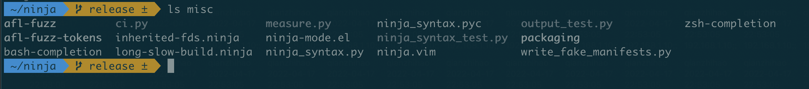
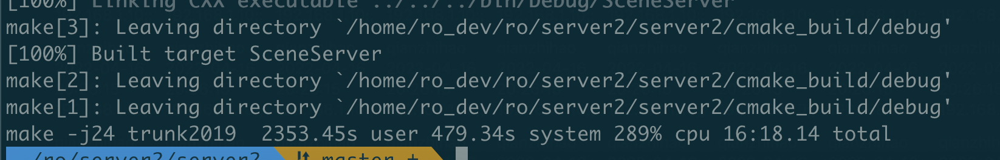
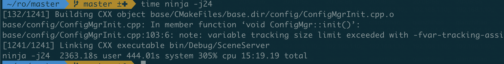

最近想试试使用 Ninja 编译，毕竟 Ninja 是以编译速度为主要目标的构建系统，下面记录下安装使用的过程。
# 1. 安装
首先将 ninja 的仓库的 release 分支下载或者 clone 下来：
$ git clone https://github.com/ninja-build/ninja.git && cd ninja | |
$ git checkout release |
官方文档这里地址协议使用了 git://github.com/ninja-build/ninja.git，但现在使用 git 会报错：
$ git clone git://github.com/ninja-build/ninja.git && cd ninja | |
Cloning into 'ninja'... | |
fatal: remote error: | |
The unauthenticated git protocol on port 9418 is no longer supported. |
这是最近 github 取消了 git 协议，详情参见 Improving Git protocol security on GitHub。
然后可以使用 python 脚本或者 cmake 去构建可执行程序：
python: | |
$ ./configure.py --bootstrap | |
cmake: | |
$ cmake -Bbuild-cmake | |
$ cmake --build build-cmake |
我这次使用的是 python 去构建的，然后遇到 re2v 相关的报错：
warning: A compatible version of re2c (>= 0.11.3) was not found; changes to src/*.in.cc will not affect your build. |
这是缺少了 re2c，使用 yum 或者 apt-get 安装完就没了，然后在同目录会生成一个 ninja 的可执行文件，拷贝至 $PATH 对应目录中即可：
$ ninja --version | |
1.10.2 |
安装完成后可以使用目录下的 ninja_test 测试一下：
$ build-cmake/ninja_test | |
[343/343] ElideMiddle.ElideInTheMiddle | |
passed |
然后根据官方文档，可以使用 misc 文件夹下的各种文件，实现 bash、zsh 的补全等功能，使用方法在对应文件的注释中，不过目前感觉没啥补全的需要，暂时没研究：

# 2. 使用
ninja 在编译时会去寻找 .ninja 的编译配置文件，默认是 build.ninja ，配置文件的格式大致如下：
cflags = -Wall
rule cc
command = gcc $cflags -c $in -o $out
build foo.o: cc foo.c
假如项目本身使用 cmake，写好了 CMakeList，可以直接使用 cmake -G Ninja 生成 build.ninja 文件，然后就可以使用 ninja 指令编译啦～
# 3. 编译结果
最后我分别使用 cmake 和 ninja 在 24 核的方式下进行了一次完整编译我们项目，结果如下：

<center>cmake</center>

<center>ninja</center>
ninja 大致快了 1min，10% 不到点，提升还可以，而且安装和配置也很轻松，还是不错的～
# 参考资料
- Ninja, a small build system with a focus on speed